T007 home-object layouts
PDF: home_objects_layouts.pdf; poses: home_objects_poses.csv
00 bin: Place each object in the plastic bin
01 bin: Place each object in the plastic bin
02 bin: Place each object in the plastic bin
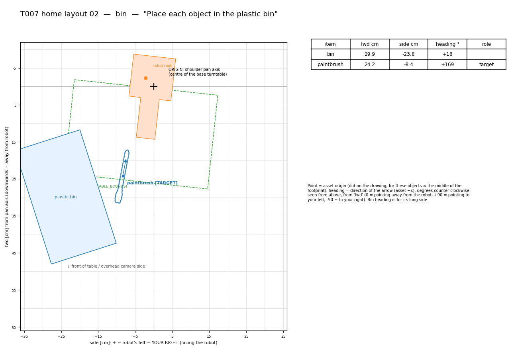
03 bin: Place each object in the plastic bin
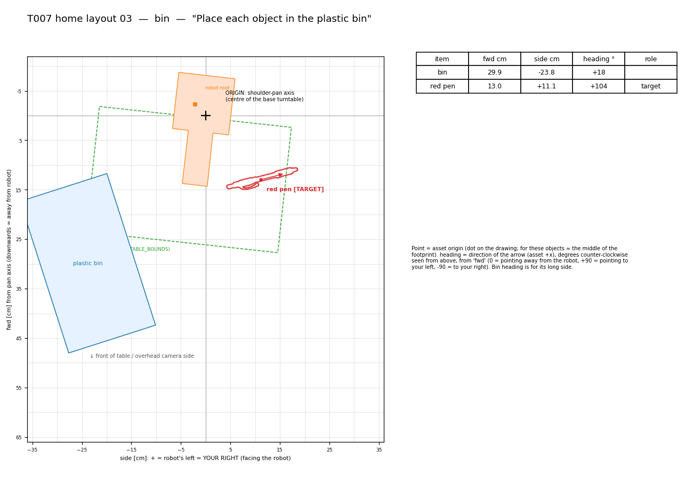
04 bin: Place each object in the plastic bin
05 bin: Place each object in the plastic bin
06 move: Move the black pen forwards
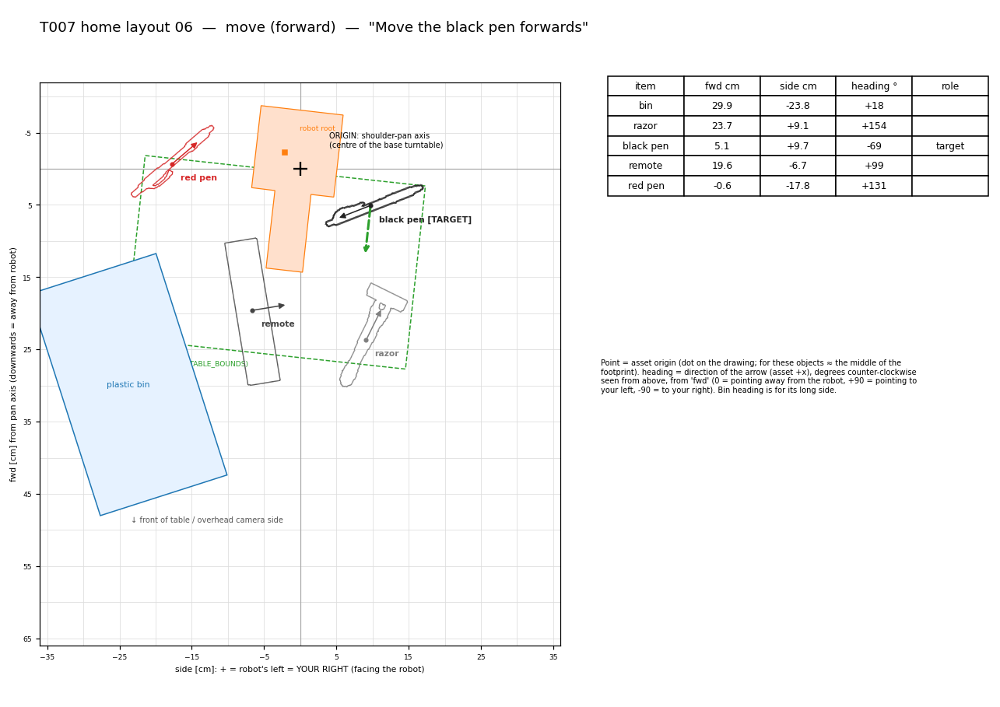
07 move: Move the pen left
08 move: Move the remote right
09 move: Move the remote left
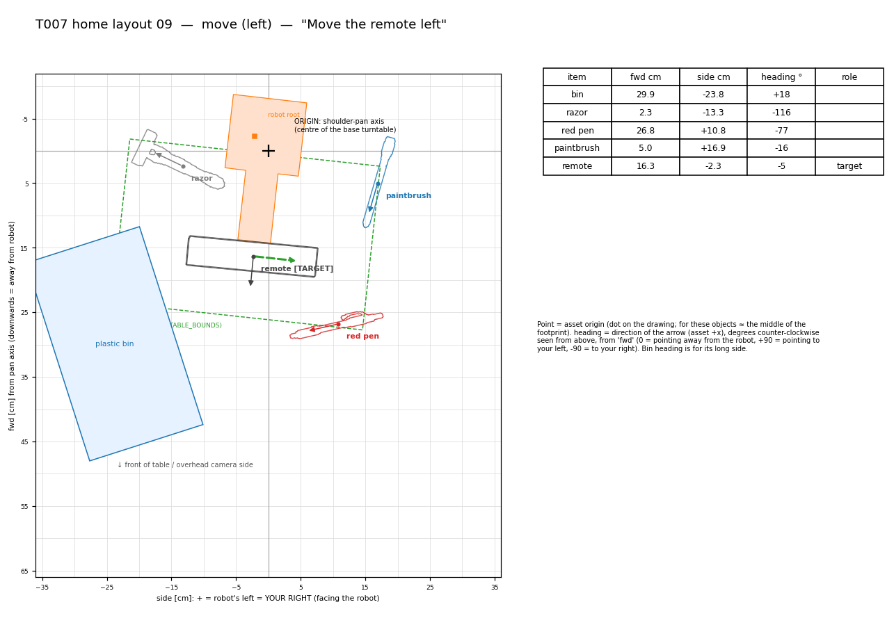
10 move: Move the red pen right
11 move: Move the toothbrush backwards
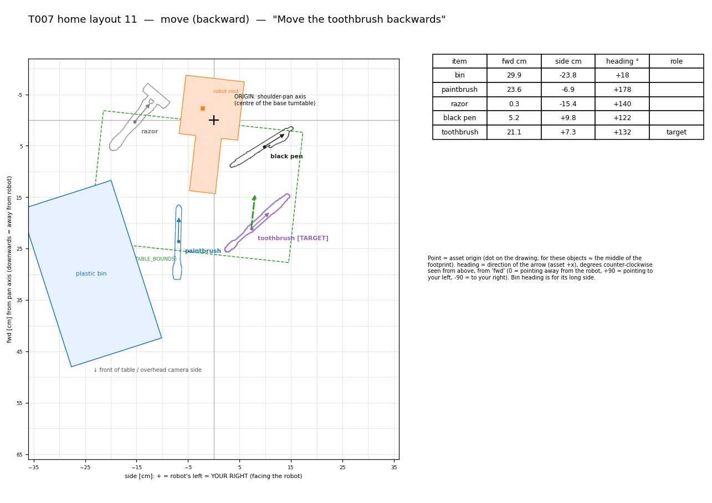
12 move: Move the paintbrush forwards
13 move: Move the razor backwards
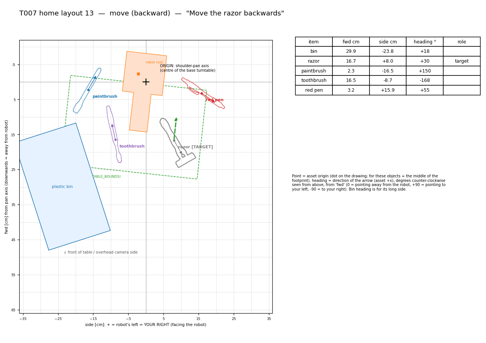
14 next_to: Place the red pen next to the remote
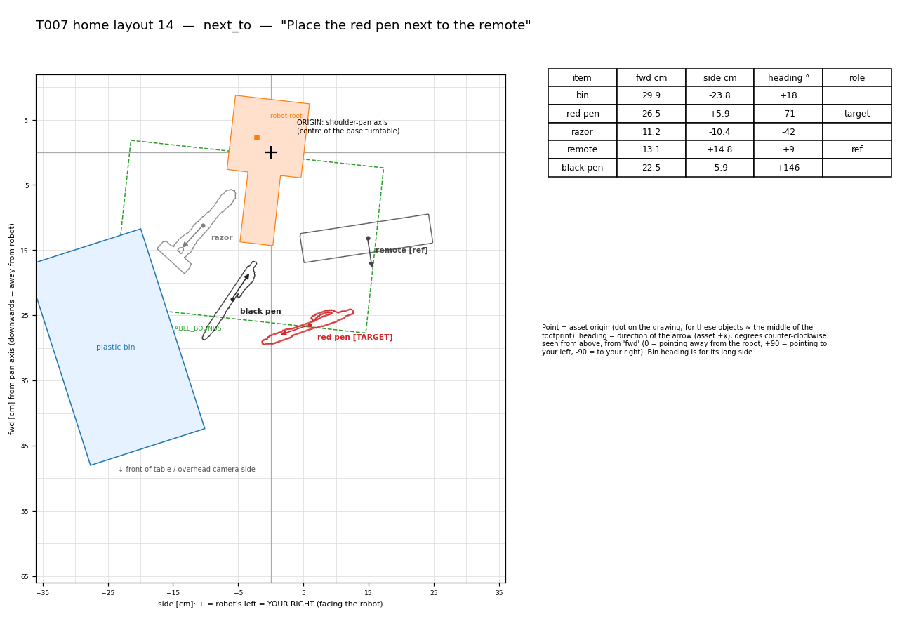
15 next_to: Place the remote next to the paintbrush
16 next_to: Place the toothbrush next to the red pen
17 next_to: Place the razor next to the toothbrush
18 next_to: Place the razor next to the black pen
19 next_to: Place the paintbrush next to the razor
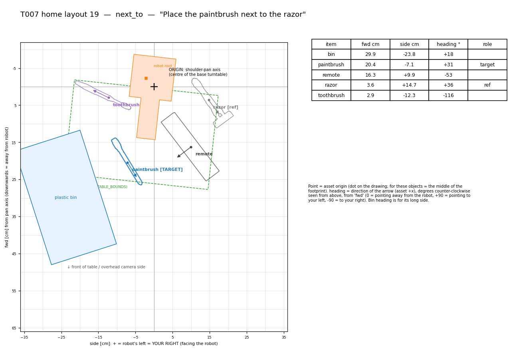
20 next_to: Place the black pen next to the toothbrush
21 next_to: Place the paintbrush next to the pen
22 between: Place the toothbrush between the paintbrush and the pen
23 between: Place the remote between the black pen and the razor
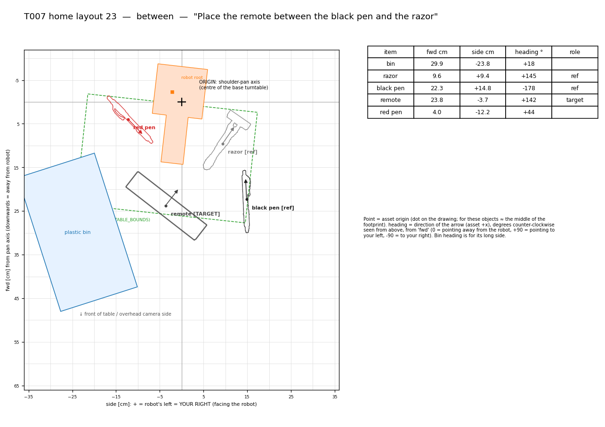
24 between: Place the pen between the toothbrush and the remote
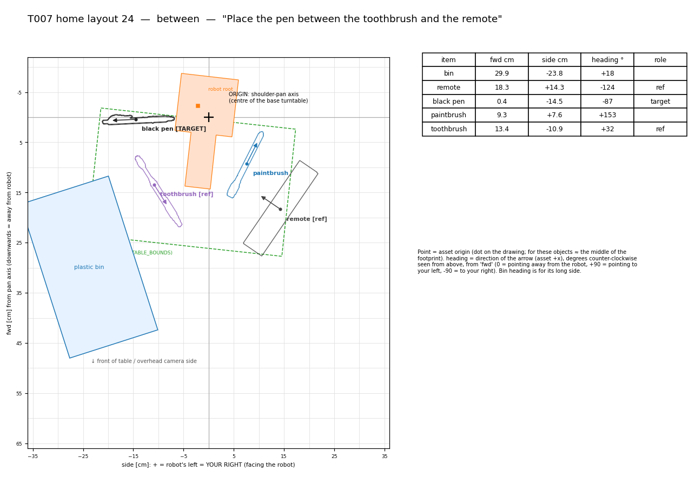
25 between: Place the red pen between the razor and the paintbrush
26 between: Place the black pen between the red pen and the toothbrush
27 between: Place the toothbrush between the remote and the pen
28 between: Place the paintbrush between the pen and the razor
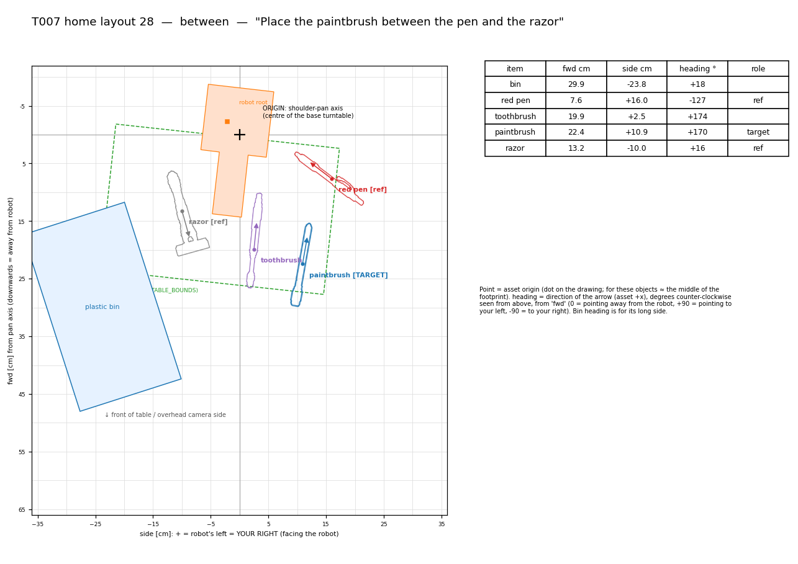
29 between: Place the razor between the remote and the paintbrush
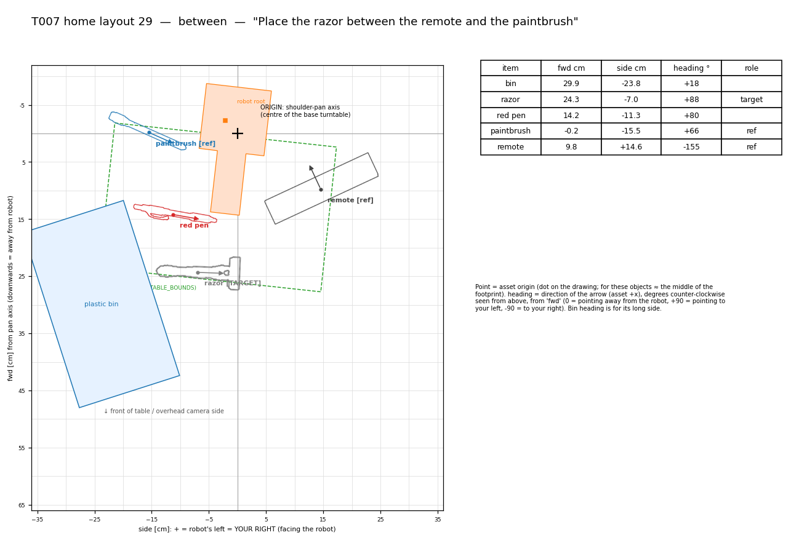